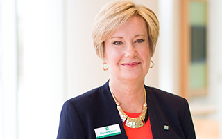
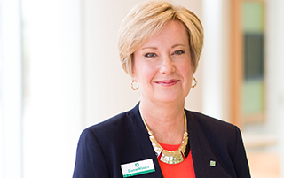

As a Mortgage Loan Officer with Citizens, you'll work directly with your customers, walking them through our unique product suite. You'll enjoy the offerings of a larger bank along with the entrepreneurial spirit and growth of a smaller lender.
Our loan programs offer a variety of solutions to help you compete effectively across a broad spectrum of borrowers. With our strong balance sheet, we can offer great conventional and portfolio loan products that give you a competitive edge.
Learn more about our products.We'll support you in generating leads and marketing, as well as implementing technology and secondary marketing. Our Lead Advantage program reaches prospects in the market for a mortgage, while our loyalty mail program will keep you in touch with current customers.
We expanded our regional operations centers to help to support you and take care of paperwork during closing time. Our one-team "pod" operations approach helps you create satisfied customers and referral sources.
In order to give our customers the best service, we'll give you a real voice in how we operate. Through our Sales Advisory Board, Sales Conferences, and our Top Producers Council, you can drive real change in the company.
The Home Lending Solutions division operates under the Citizens Bank brand within our banking footprint:
Massachusetts, Rhode Island, Connecticut,
New Hampshire, Vermont, New York, New Jersey, Pennsylvania, Delaware,
Ohio and Michigan. Outside of this
footprint, we market our home lending

“Citizens Bank is in a growth mode. We're planning to be around for the long term and we're proving that by growing sales."
– Ed, Mortgage Loan Officer in Buffalo

“The senior management is very committed to the mortgage lending business on every level – from the top, down. We’re all going in the same direction and that’s what I like. So, if I have a question or idea, I can get answers. They listen and we get things done. They are really investing to grow the mortgage business."
– Mark, Senior Mortgage Loan Officer in Chicago

“It is so great to be part of an organization that is looking for solutions and creativity versus creating barriers that cause problems."
– John, Mortgage Loan Officer in Charleston